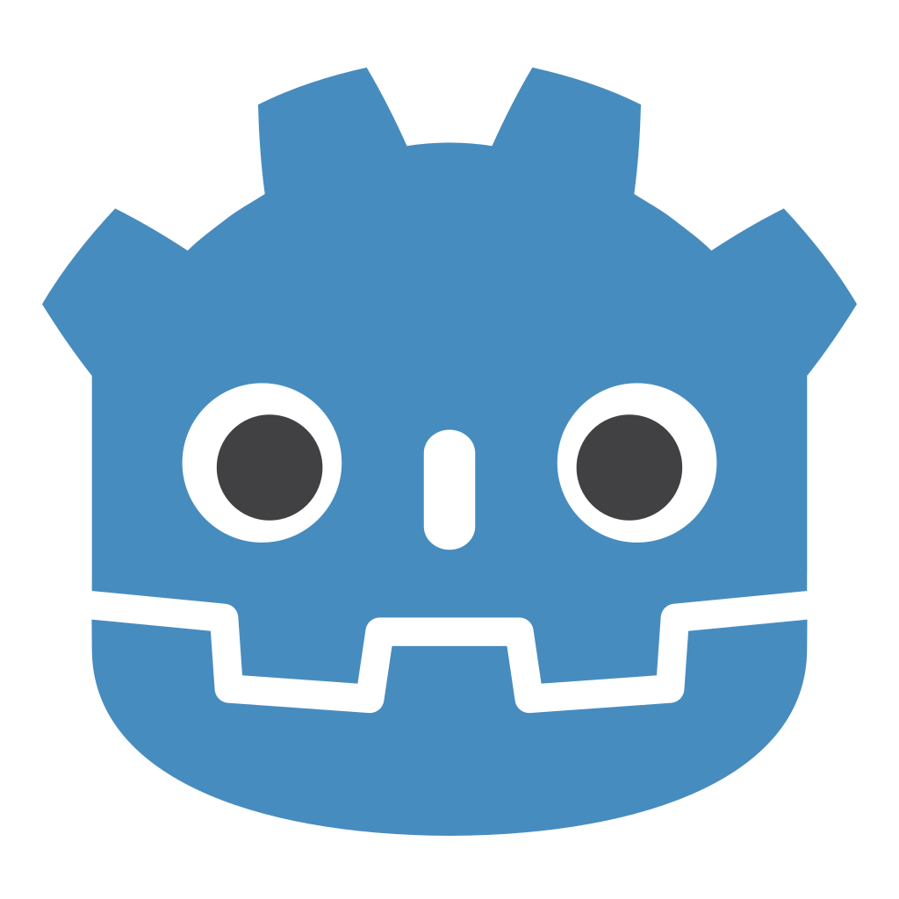
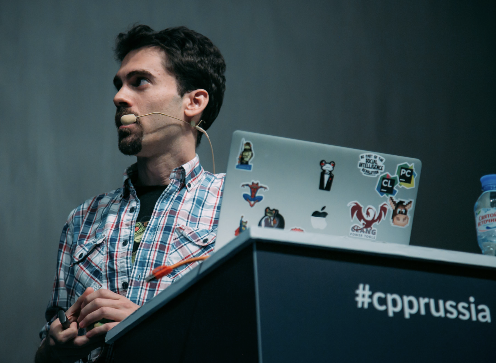
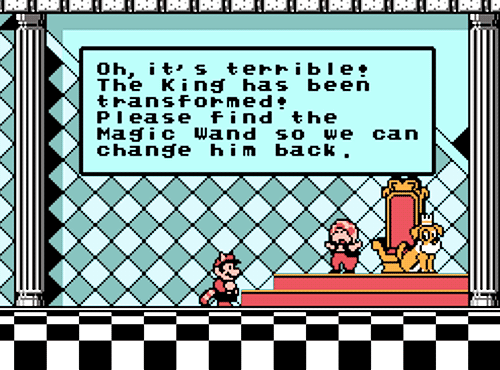

jgsogo/GodotMadridCpp
Tweet @jgsogo
 Javier G. Sogo | Senior software developer |
Javier G. Sogo | Senior software developer |
 JFrog LTD |
JFrog LTD |
 Conan C/C++ Package Manager
Conan C/C++ Package Manager
Javier G. Sogo | Senior software developer |
GDNative
Using C++ inside Godot


21 de noviembre de 2019
Madrid C/C++ User Group
Javier García Sogo
C++/Python/DevOps... engineer
@jgsogo
About me
Javier G. Sogo
Software | Conan.io | JFrog™
 jgsogo
jgsogo
 @jgsogo
@jgsogo
Godot uses GDScript
- Powerful: signals, yields, singletons,...
- Fast enough
- Dynamic typing
- Sooooo easy
GDScript example
# Hero.gd
extends LivingThing
var life_points = 100
const axis_x = Vector2(1, 0)
func receive_impact(direction, damage):
life_points = life_points - damage
if life_points <= 0:
emit_signal("killed", self)
Each file is a class
Godot framework
- Graphics 2D/3D
- Audio
- Physics
- I/O
- Networking
- ...
Interactive fiction
Interactive fiction
Interactive fiction
Can we make it better?
Use state-of-the-art NLP libraries
Tensorflow, Freeling,... many are C++
Plug them in using GDNative
Live demo!
"C" interface
#include <core/Godot.hpp>
#include "godot_ia.h"
/** GDNative Initialize **/
extern "C" void GDN_EXPORT godot_gdnative_init(godot_gdnative_init_options *o) {
godot::Godot::gdnative_init(o);
}
/** GDNative Terminate **/
extern "C" void GDN_EXPORT godot_gdnative_terminate(godot_gdnative_terminate_options *o) {
godot::Godot::gdnative_terminate(o);
}
/** NativeScript Initialize **/
extern "C" void GDN_EXPORT godot_nativescript_init(void *handle) {
godot::Godot::nativescript_init(handle);
godot::register_class<godot::GodotGameIA>();
}
Linked with GodotNativeTools/godot-cpp
"C" interface
#include <core/Godot.hpp>
#include "godot_ia.h"
/** GDNative Initialize **/
extern "C" void GDN_EXPORT godot_gdnative_init(godot_gdnative_init_options *o) {
godot::Godot::gdnative_init(o);
}
/** GDNative Terminate **/
extern "C" void GDN_EXPORT godot_gdnative_terminate(godot_gdnative_terminate_options *o) {
godot::Godot::gdnative_terminate(o);
}
/** NativeScript Initialize **/
extern "C" void GDN_EXPORT godot_nativescript_init(void *handle) {
godot::Godot::nativescript_init(handle);
godot::register_class<godot::GodotGameIA>();
}
Linked with GodotNativeTools/godot-cpp
.gdnlib
[general]
singleton=false
load_once=true
symbol_prefix="godot_"
reloadable=false
[entry]
X11.64="res://package/bin/libgodot-game-ia.so"
Windows.64="res://package/bin/libgodot-game-ia.dll"
OSX.64="res://package/bin/libgodot-game-ia.dylib"
[dependencies]
X11.64=[]
Windows.64=[]
OSX.64=[]
.gdns
[gd_resource type="NativeScript" load_steps=2 format=2]
[ext_resource path="res://package/bin/godot-game-ia.gdnlib" type="GDNativeLibrary" id=1]
[resource]
resource_name = "godot-game-ia"
class_name = "GodotGameIA"
library = ExtResource( 1 )
_sections_unfolded = [ "Resource" ]
C++ implementation
#include <core/Godot.hpp>
#include <Reference.hpp>
namespace godot {
class GodotGameIA : public Reference {
GODOT_CLASS(GodotGameIA, Reference);
public:
GodotGameIA();
~GodotGameIA();
void _init(); // _init must exist as it is called by Godot
static void _register_methods();
void send_message(String message, Variant chat_id);
void register_callback(godot::Object *p_instance, Variant chat_id);
void remove_callback(Variant chat_id);
protected:
struct Impl;
std::unique_ptr pImpl;
};
}
C++ implementation
namespace godot {
class GodotGameIA : public Reference {
GODOT_CLASS(GodotGameIA, Reference);
...
void send_message(String message, Variant chat_id);
void register_callback(godot::Object *p_instance, Variant chat_id);
void remove_callback(Variant chat_id);
...
};
}
void GodotGameIA::_register_methods() {
register_method("send_message", &GodotGameIA::send_message);
register_method("register_callback", &GodotGameIA::register_callback);
register_method("remove_callback", &GodotGameIA::remove_callback);
register_signal("signal_ready", "id", GODOT_VARIANT_TYPE_INT, "message", GODOT_VARIANT_TYPE_STRING);
register_signal("signal_disconnected", "id", GODOT_VARIANT_TYPE_INT, "message", GODOT_VARIANT_TYPE_STRING);
} Godot C++ NLP
onready var GodotGameIA = preload("res://package/bin/godot-game-ia.gdns").new()
func _ready():
GodotGameIA.connect("signal_ready", self, "_on_GodotGameIA_signal_ready")
GodotGameIA.connect("signal_disconnected", self, "_on_GodotGameIA_signal_disconnected")
func _on_Dialog_text_sent(msg)->void:
GodotGameIA.send_message(msg, chat_id)
Forward the message to the C++ library
void GodotGameIA::send_message(String message, Variant chat_id) {
pImpl->dialog.send_message(chat_id, message.utf8().get_data());
}
Forward the message to the NLP library
Godot C++ NLP
onready var GodotGameIA = preload("res://package/bin/godot-game-ia.gdns").new()
func _on_Dialog_popup_show():
# Pass myself to the C++ library
GodotGameIA.register_callback(self, chat_id)
void GodotGameIA::register_callback(godot::Object *p_instance, Variant chat_id) {
// Use a lambda for the callback
pImpl->dialog.connect(chat_id, [=](const std::string& message) {
p_instance->call("gdscript_callback", message.c_str());
});
}
# Receive messages from C++
func gdscript_callback(msg):
$Dialog.add_text("Johnny: " + msg)
GDNative
Using C++ inside Godot
21 de noviembre de 2019
Madrid C/C++ User Group
Javier García Sogo
C++/Python/DevOps... engineer
@jgsogo